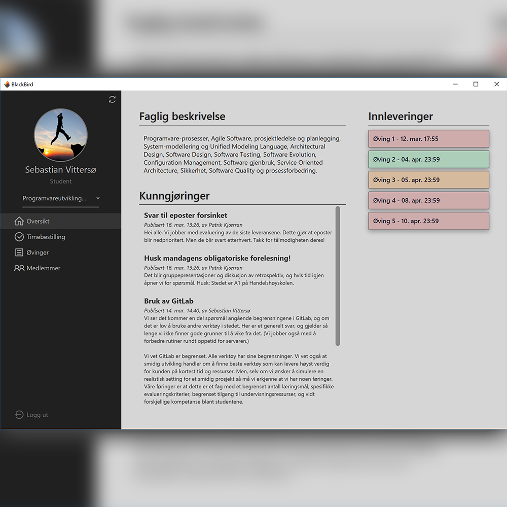

Sebastian Vittersø
Datateknologistudent ved NTNU.
Prosjekter:

BlackBird
I faget Programvareutvikling utviklet vi skrivebordsapplikasjonen BlackBird,
en kalenderløsning for studentassistenter på lesesal med mulighet for levering av øvinger og kunngjøringer i fag.
Programmet er et gruppeprosjekt hvor vi samarbeidet i en gruppe på seks. Mitt hovedansvar lå i back-end (MySQL via JDBC).
UL-appen
Informasjons-app for NLMs ungdomsfestival UL, skrevet i React Native.
Gruppeprosjekt med tre medstudenter.

UL.no
Nettside for NLMs ungdomsfestival UL, bygget i Wordpress.
Dette prosjektet tok vi (samme gruppe som app) over fra web-ansvarlig, og har kun oppdatert nettsidens innhold.